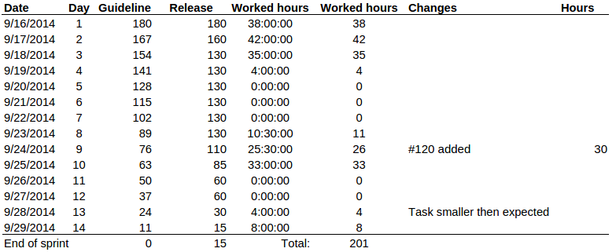
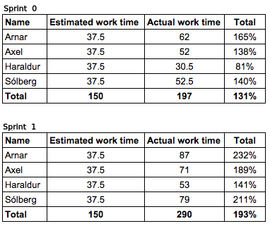
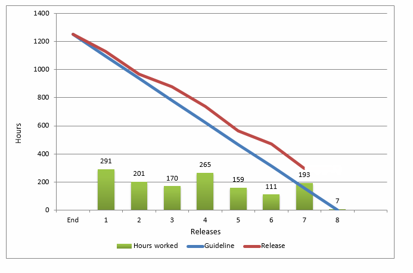

Your browser doesn't support the features required by impress.js, so you are presented with a simplified version of this presentation.
For the best experience please use the latest Chrome, Safari or Firefox browser.
Hashtag games and voting systems for social media management
The team
Arnar Þór Sveinsson
Axel Máni Gíslason
Haraldur Andri Sveinsson
Sólberg Bjarki Valdimarsson
Developed for
Our project
We will implement a system that simplifies the process of creating social media games, polling and gathering data for companies
Our project is to implement the following into the Tagplay system
- Automated sharing
- Ability to automatically share status/post/tweet from one social media to another
Done
- Sweepstakes or games
- Create a game where everything is controlled by #hashtag and social media's
Done
- Voting
- Ask a question on your website or on social media site and let the users answer. We will then collect the data and process it
- Datamining
- Get more information about the customers
Sprint 1
Characterized by mistakes and miscalculations
We finished 75% of the sprint
We learned alot from it and that should really help us in planning the rest of the project
Sprint 1 - Overview
Sprint 1
Sprint 2
We finished about 90% of the sprint
We learned alot from sprint 1 which make organzing splened
Sprint 2 - Overview

Sprint 2
Sprint 3
Everything went according to plan
We finished 85% of the sprint
Sprint 3 - Overview
Sprint 3

Time summary

Finished
Automated sharing
Sweepstakes
Working on
Production and template
Voting
Questions?